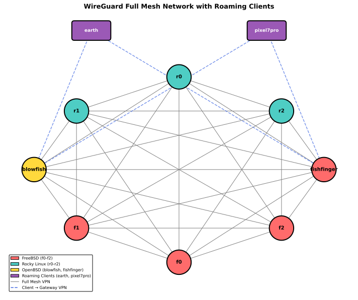

f3s: Kubernetes with FreeBSD - Part 5: WireGuard mesh network
Published at 2025-05-11T11:35:57+03:00, last updated Thu 15 Jan 19:30:46 EET 2026
This is the fifth blog post about my f3s series for my self-hosting demands in my home lab. f3s? The "f" stands for FreeBSD, and the "3s" stands for k3s, the Kubernetes distribution I will use on FreeBSD-based physical machines.
I will post a new entry every month or so (there are too many other side projects for more frequent updates — I bet you can understand).
This post has been updated to include two roaming clients (earth - Fedora laptop, pixel7pro - Android phone) that connect to the mesh via the internet gateways. The updated content is integrated throughout the post.
These are all the posts so far:
2024-11-17 f3s: Kubernetes with FreeBSD - Part 1: Setting the stage
2024-12-03 f3s: Kubernetes with FreeBSD - Part 2: Hardware and base installation
2025-02-01 f3s: Kubernetes with FreeBSD - Part 3: Protecting from power cuts
2025-04-05 f3s: Kubernetes with FreeBSD - Part 4: Rocky Linux Bhyve VMs
2025-05-11 f3s: Kubernetes with FreeBSD - Part 5: WireGuard mesh network (You are currently reading this)
2025-07-14 f3s: Kubernetes with FreeBSD - Part 6: Storage
2025-10-02 f3s: Kubernetes with FreeBSD - Part 7: k3s and first pod deployments
2025-12-07 f3s: Kubernetes with FreeBSD - Part 8: Observability
2025-12-14 f3s: Kubernetes with FreeBSD - Part 8b: Distributed Tracing with Tempo
2026-04-02 f3s: Kubernetes with FreeBSD - Part 9: GitOps with ArgoCD

ChatGPT generated logo.
Let's begin...
Table of Contents
Introduction
By default, traffic within my home LAN, including traffic inside a k3s cluster, is not encrypted. While it resides in the "secure" home LAN, adopting a zero-trust policy means encryption is still preferable to ensure confidentiality and security. So we decide to secure all the traffic of all f3s participating hosts by building a mesh network:

The mesh network consists of eight infrastructure hosts and two roaming clients:
Infrastructure hosts (full mesh):
- f0, f1, and f2 are the FreeBSD base hosts in my home LAN
- r0, r1, and r2 are the Rocky Linux Bhyve VMs running on the FreeBSD hosts
- blowfish and fishfinger are two OpenBSD systems running on the internet (as mentioned in the first blog of this series—these systems are already built; in fact, this very blog is served by those OpenBSD systems)
oaming clients (gateway-only connections):
- earth is my Fedora laptop (192.168.2.200) which connects only to the internet gateways for remote access
- pixel7pro is my Android phone (192.168.2.201) which routes all traffic through the VPN when activated
As we can see from the diagram, the eight infrastructure hosts form a true full-mesh network, where every host has a VPN tunnel to every other host. The benefit is that we do not need to route traffic through intermediate hosts (significantly simplifying the routing configuration). However, the downside is that there is some overhead in configuring and managing all the tunnels. The roaming clients take a simpler approach—they only connect to the two internet-facing gateways (blowfish and fishfinger), which is sufficient for remote access and internet connectivity.
For simplicity, we also establish VPN tunnels between f0 <-> r0, f1 <-> r1, and f2 <-> r2. Technically, this wouldn't be strictly required since the VMs rN are running on the hosts fN, and no network traffic is leaving the box. However, it simplifies the configuration as we don't have to account for exceptions, and we are going to automate the mesh network configuration anyway (read on).
Expected traffic flow
The traffic is expected to flow between the host groups through the mesh network as follows:
nfrastructure mesh traffic:
- fN <-> rN: The traffic between the FreeBSD hosts and the Rocky Linux VMs will be routed through the VPN tunnels for persistent storage. In a later post in this series, we will set up an NFS server on the fN hosts.
- fN <-> blowfish,fishfinger: The traffic between the FreeBSD hosts and the OpenBSD host blowfish,fishfinger will be routed through the VPN tunnels for management. We may want to log in via the internet to set it up remotely. The VPN tunnel will also be used for monitoring purposes.
- rN <-> blowfish,fishfinger: The traffic between the Rocky Linux VMs and the OpenBSD host blowfish,fishfinger will be routed through the VPN tunnels for usage traffic. Since k3s will be running on the rN hosts, the OpenBSD servers will route the traffic through relayd to the services running in Kubernetes.
- fN <-> fM: The traffic between the FreeBSD hosts may be later used for data replication for the NFS storage.
- rN <-> rM: The traffic between the Rocky Linux VMs will later be used by the k3s cluster itself, as every rN will be a Kubernetes worker node.
- blowfish <-> fishfinger: The traffic between the OpenBSD hosts isn't strictly required for this setup, but I set it up anyway for future use cases.
oaming client traffic:
- earth,pixel7pro <-> blowfish,fishfinger: The roaming clients connect exclusively to the two internet gateways. All traffic from these clients (0.0.0.0/0) is routed through the VPN, providing secure internet access and the ability to reach services running in the mesh (via the gateways). The gateways use NAT to allow roaming clients to access the internet using the gateway's public IP address. The roaming clients cannot be reached by the LAN hosts—they are client-only and initiate all connections.
We won't cover all the details in this blog post, as we only focus on setting up the Mesh network in this blog post. Subsequent posts in this series will cover the other details.
Deciding on WireGuard
I have decided to use WireGuard as the VPN technology for this purpose.
WireGuard is a lightweight, modern, and secure VPN protocol designed for simplicity, speed, and strong cryptography. It is an excellent choice due to its minimal codebase, ease of configuration, high performance, and robust security, utilizing state-of-the-art encryption standards. WireGuard is supported on various operating systems, and its implementations are compatible with each other. Therefore, establishing WireGuard VPN tunnels between FreeBSD, Linux, and OpenBSD is seamless. This cross-platform availability makes it suitable for setups like the one described in this blog series.
We could have used Tailscale for an easy to set up and manage the WireGuard network, but the benefits of creating our own mesh network are:
- Learning about WireGuard configuration details
- Have full control over the setup
- Don't rely on an external provider like Tailscale (even if some of the components are open-source)
- Have even more fun along the way
- WireGuard is easy to configure on my target operating systems and, therefore, easier to maintain in the long run.
- There are no official Tailscale packages available for OpenBSD and FreeBSD. However, getting Tailscale running on these systems is still possible, though some tinkering would be required. Instead, we use that tinkering time to set up WireGuard tunnels ourselves.
https://en.wikipedia.org/wiki/WireGuard
https://www.wireguard.com/
https://tailscale.com/

Base configuration
In the following, we prepare the base configuration for the WireGuard mesh network. We will use a similar configuration on all participating hosts, with the exception of the host IP addresses and the private keys.
FreeBSD
On the FreeBSD hosts f0, f1 and f2, similar as last time, first, we bring the system up to date:
paul@f0:~ % doas freebsd-update fetch
paul@f0:~ % doas freebsd-update install
paul@f0:~ % doas shutdown -r now
..
..
paul@f0:~ % doas pkg update
paul@f0:~ % doas pkg upgrade
paul@f0:~ % reboot
Next, we install wireguard-tools and configure the WireGuard service:
paul@f0:~ % doas pkg install wireguard-tools
paul@f0:~ % doas sysrc wireguard_interfaces=wg0
wireguard_interfaces: -> wg0
paul@f0:~ % doas sysrc wireguard_enable=YES
wireguard_enable: -> YES
paul@f0:~ % doas mkdir -p /usr/local/etc/wireguard
paul@f0:~ % doas touch /usr/local/etc/wireguard/wg0.conf
paul@f0:~ % doas service wireguard start
paul@f0:~ % doas wg show
interface: wg0
public key: L+V9o0fNYkMVKNqsX7spBzD/9oSvxM/C7ZCZX1jLO3Q=
private key: (hidden)
listening port: 20246
We now have the WireGuard up and running, but it is not yet in any functional configuration. We will come back to that later.
Next, we add all the participating WireGuard IPs to the hosts file. This is only convenience, so we don't have to manage an external DNS server for this:
paul@f0:~ % cat <<END | doas tee -a /etc/hosts
192.168.1.120 r0 r0.lan r0.lan.buetow.org
192.168.1.121 r1 r1.lan r1.lan.buetow.org
192.168.1.122 r2 r2.lan r2.lan.buetow.org
192.168.2.130 f0.wg0 f0.wg0.wan.buetow.org
192.168.2.131 f1.wg0 f1.wg0.wan.buetow.org
192.168.2.132 f2.wg0 f2.wg0.wan.buetow.org
192.168.2.120 r0.wg0 r0.wg0.wan.buetow.org
192.168.2.121 r1.wg0 r1.wg0.wan.buetow.org
192.168.2.122 r2.wg0 r2.wg0.wan.buetow.org
192.168.2.110 blowfish.wg0 blowfish.wg0.wan.buetow.org
192.168.2.111 fishfinger.wg0 fishfinger.wg0.wan.buetow.org
fd42:beef:cafe:2::130 f0.wg0 f0.wg0.wan.buetow.org
fd42:beef:cafe:2::131 f1.wg0 f1.wg0.wan.buetow.org
fd42:beef:cafe:2::132 f2.wg0 f2.wg0.wan.buetow.org
fd42:beef:cafe:2::120 r0.wg0 r0.wg0.wan.buetow.org
fd42:beef:cafe:2::121 r1.wg0 r1.wg0.wan.buetow.org
fd42:beef:cafe:2::122 r2.wg0 r2.wg0.wan.buetow.org
fd42:beef:cafe:2::110 blowfish.wg0 blowfish.wg0.wan.buetow.org
fd42:beef:cafe:2::111 fishfinger.wg0 fishfinger.wg0.wan.buetow.org
END
As you can see, 192.168.1.0/24 is the network used in my LAN (with the fN and rN hosts) and 192.168.2.0/24 is the network used for the WireGuard mesh network. The wg0 interface will be used for all WireGuard traffic.
Rocky Linux
We bring the Rocky Linux VMs up to date as well with the following:
[root@r0 ~] dnf update -y
[root@r0 ~] reboot
Next, we prepare WireGuard on them. Same as on the FreeBSD hosts, we will only prepare WireGuard without any useful configuration yet:
[root@r0 ~] dnf install -y wireguard-tools
[root@r0 ~] mkdir -p /etc/wireguard
[root@r0 ~] touch /etc/wireguard/wg0.conf
[root@r0 ~] systemctl enable wg-quick@wg0.service
[root@r0 ~] systemctl start wg-quick@wg0.service
[root@r0 ~] systemctl disable firewalld
We also update the hosts file accordingly:
[root@r0 ~] cat <<END >>/etc/hosts
192.168.1.130 f0 f0.lan f0.lan.buetow.org
192.168.1.131 f1 f1.lan f1.lan.buetow.org
192.168.1.132 f2 f2.lan f2.lan.buetow.org
192.168.2.130 f0.wg0 f0.wg0.wan.buetow.org
192.168.2.131 f1.wg0 f1.wg0.wan.buetow.org
192.168.2.132 f2.wg0 f2.wg0.wan.buetow.org
192.168.2.120 r0.wg0 r0.wg0.wan.buetow.org
192.168.2.121 r1.wg0 r1.wg0.wan.buetow.org
192.168.2.122 r2.wg0 r2.wg0.wan.buetow.org
192.168.2.110 blowfish.wg0 blowfish.wg0.wan.buetow.org
192.168.2.111 fishfinger.wg0 fishfinger.wg0.wan.buetow.org
fd42:beef:cafe:2::130 f0.wg0 f0.wg0.wan.buetow.org
fd42:beef:cafe:2::131 f1.wg0 f1.wg0.wan.buetow.org
fd42:beef:cafe:2::132 f2.wg0 f2.wg0.wan.buetow.org
fd42:beef:cafe:2::120 r0.wg0 r0.wg0.wan.buetow.org
fd42:beef:cafe:2::121 r1.wg0 r1.wg0.wan.buetow.org
fd42:beef:cafe:2::122 r2.wg0 r2.wg0.wan.buetow.org
fd42:beef:cafe:2::110 blowfish.wg0 blowfish.wg0.wan.buetow.org
fd42:beef:cafe:2::111 fishfinger.wg0 fishfinger.wg0.wan.buetow.org
END
Unfortunately, the SELinux policy on Rocky Linux blocks WireGuard's operation. By making the wireguard_t domain permissive using semanage permissive -a wireguard_t, SELinux will no longer enforce restrictions for WireGuard, allowing it to work as intended:
[root@r0 ~] dnf install -y policycoreutils-python-utils
[root@r0 ~] semanage permissive -a wireguard_t
[root@r0 ~] reboot
https://github.com/angristan/wireguard-install/discussions/499
OpenBSD
Other than the FreeBSD and Rocky Linux hosts involved, my OpenBSD hosts (blowfish and fishfinger, which are running at OpenBSD Amsterdam and Hetzner on the internet) have been running already for longer, so I can't provide you with the "from scratch" installation details here. In the following, we will only focus on the additional configuration needed to set up WireGuard:
blowfish$ doas pkg_add wireguard-tools
blowfish$ doas mkdir /etc/wireguard
blowfish$ doas touch /etc/wireguard/wg0.conf
blowsish$ cat <<END | doas tee /etc/hostname.wg0
inet 192.168.2.110 255.255.255.0 NONE
up
!/usr/local/bin/wg setconf wg0 /etc/wireguard/wg0.conf
END
Note that on blowfish, we configure 192.168.2.110 here in the hostname.wg, and on fishfinger, we configure 192.168.2.111. Those are the IP addresses of the WireGuard interfaces on those hosts.
And here, we also update the hosts file accordingly:
blowfish$ cat <<END | doas tee -a /etc/hosts
192.168.2.130 f0.wg0 f0.wg0.wan.buetow.org
192.168.2.131 f1.wg0 f1.wg0.wan.buetow.org
192.168.2.132 f2.wg0 f2.wg0.wan.buetow.org
192.168.2.120 r0.wg0 r0.wg0.wan.buetow.org
192.168.2.121 r1.wg0 r1.wg0.wan.buetow.org
192.168.2.122 r2.wg0 r2.wg0.wan.buetow.org
192.168.2.110 blowfish.wg0 blowfish.wg0.wan.buetow.org
192.168.2.111 fishfinger.wg0 fishfinger.wg0.wan.buetow.org
192.168.2.200 earth.wg0 earth.wg0.wan.buetow.org
192.168.2.201 pixel7pro.wg0 pixel7pro.wg0.wan.buetow.org
fd42:beef:cafe:2::130 f0.wg0 f0.wg0.wan.buetow.org
fd42:beef:cafe:2::131 f1.wg0 f1.wg0.wan.buetow.org
fd42:beef:cafe:2::132 f2.wg0 f2.wg0.wan.buetow.org
fd42:beef:cafe:2::120 r0.wg0 r0.wg0.wan.buetow.org
fd42:beef:cafe:2::121 r1.wg0 r1.wg0.wan.buetow.org
fd42:beef:cafe:2::122 r2.wg0 r2.wg0.wan.buetow.org
fd42:beef:cafe:2::110 blowfish.wg0 blowfish.wg0.wan.buetow.org
fd42:beef:cafe:2::111 fishfinger.wg0 fishfinger.wg0.wan.buetow.org
fd42:beef:cafe:2::200 earth.wg0 earth.wg0.wan.buetow.org
fd42:beef:cafe:2::201 pixel7pro.wg0 pixel7pro.wg0.wan.buetow.org
END
To enable roaming clients (like earth and pixel7pro) to access the internet through the VPN, we need to configure NAT on the OpenBSD gateways. This allows the roaming clients to use the gateway's public IP address for outbound traffic. We add the following to /etc/pf.conf on both blowfish and fishfinger:
# NAT for WireGuard clients to access internet
match out on vio0 from 192.168.2.0/24 to any nat-to (vio0)
# Allow inbound traffic on WireGuard interface
pass in on wg0
# Allow all UDP traffic on WireGuard port
pass in inet proto udp from any to any port 56709
The NAT rule translates outgoing traffic from the WireGuard network (192.168.2.0/24) to the gateway's public IP. The firewall rules permit WireGuard traffic on the wg0 interface and UDP port 56709. After updating /etc/pf.conf, reload the firewall:
blowfish$ doas pfctl -f /etc/pf.conf
WireGuard configuration
So far, we have only started WireGuard on all participating hosts without any useful configuration. This means that no VPN tunnel has been established yet between any of the hosts.
Example wg0.conf
Generally speaking, a wg0.conf looks like this (example from f0 host):
[Interface]
# f0.wg0.wan.buetow.org
Address = 192.168.2.130
PrivateKey = **************************
ListenPort = 56709
[Peer]
# f1.lan.buetow.org as f1.wg0.wan.buetow.org
PublicKey = **************************
PresharedKey = **************************
AllowedIPs = 192.168.2.131/32
Endpoint = 192.168.1.131:56709
# No KeepAlive configured
[Peer]
# f2.lan.buetow.org as f2.wg0.wan.buetow.org
PublicKey = **************************
PresharedKey = **************************
AllowedIPs = 192.168.2.132/32
Endpoint = 192.168.1.132:56709
# No KeepAlive configured
[Peer]
# r0.lan.buetow.org as r0.wg0.wan.buetow.org
PublicKey = **************************
PresharedKey = **************************
AllowedIPs = 192.168.2.120/32
Endpoint = 192.168.1.120:56709
# No KeepAlive configured
[Peer]
# r1.lan.buetow.org as r1.wg0.wan.buetow.org
PublicKey = **************************
PresharedKey = **************************
AllowedIPs = 192.168.2.121/32
Endpoint = 192.168.1.121:56709
# No KeepAlive configured
[Peer]
# r2.lan.buetow.org as r2.wg0.wan.buetow.org
PublicKey = **************************
PresharedKey = **************************
AllowedIPs = 192.168.2.122/32
Endpoint = 192.168.1.122:56709
# No KeepAlive configured
[Peer]
# blowfish.buetow.org as blowfish.wg0.wan.buetow.org
PublicKey = **************************
PresharedKey = **************************
AllowedIPs = 192.168.2.110/32
Endpoint = 23.88.35.144:56709
PersistentKeepalive = 25
[Peer]
# fishfinger.buetow.org as fishfinger.wg0.wan.buetow.org
PublicKey = **************************
PresharedKey = **************************
AllowedIPs = 192.168.2.111/32
Endpoint = 46.23.94.99:56709
PersistentKeepalive = 25
For roaming clients like pixel7pro (Android phone) or earth (Fedora laptop), the configuration looks different because they route all traffic through the VPN and only connect to the internet gateways:
[Interface]
# pixel7pro.wg0.wan.buetow.org
Address = 192.168.2.201
PrivateKey = **************************
ListenPort = 56709
DNS = 1.1.1.1, 8.8.8.8
[Peer]
# blowfish.buetow.org as blowfish.wg0.wan.buetow.org
PublicKey = **************************
PresharedKey = **************************
AllowedIPs = 0.0.0.0/0, ::/0
Endpoint = 23.88.35.144:56709
PersistentKeepalive = 25
[Peer]
# fishfinger.buetow.org as fishfinger.wg0.wan.buetow.org
PublicKey = **************************
PresharedKey = **************************
AllowedIPs = 0.0.0.0/0, ::/0
Endpoint = 46.23.94.99:56709
PersistentKeepalive = 25
Note the key differences for roaming clients:
- DNS is configured to use external DNS servers (Cloudflare and Google)
- AllowedIPs = 0.0.0.0/0, ::/0 routes all traffic (IPv4 and IPv6) through the VPN
- Only two peers are configured (the internet gateways), not the full mesh
- PersistentKeepalive = 25 is used for both peers to maintain NAT traversal
Whereas there are two main sections. One is [Interface], which configures the current host (here: f0 or pixel7pro):
- Address: Local virtual IP address on the WireGuard interface.
- PrivateKey: Private key for this node.
- ListenPort: Port on which this WireGuard interface listens for incoming connections.
And in the following, there is one [Peer] section for every peer node on the mesh network:
- PublicKey: The public key of the remote peer is used to authenticate their identity.
- PresharedKey: An optional symmetric key is used to enhance security (used in addition to PublicKey).
- AllowedIPs: IPs or subnets routed through this peer (traffic is allowed to/from these IPs).
- Endpoint: The public IP:port combination of the remote peer for connection.
- PersistentKeepalive: Keeps the tunnel alive by sending periodic packets; used for NAT traversal.
NAT traversal and keepalive
As all participating hosts, except for blowfish and fishfinger (which are on the internet), are behind a NAT gateway (my home router), we need to use PersistentKeepalive to establish and maintain the VPN tunnel from the LAN to the internet because:
By default, WireGuard tries to be as silent as possible when not being used; it is not a chatty protocol. For the most part, it only transmits data when a peer wishes to send packets. When it's not being asked to send packets, it stops sending packets until it is asked again. In the majority of configurations, this works well. However, when a peer is behind NAT or a firewall, it might wish to be able to receive incoming packets even when it is not sending any packets. Because NAT and stateful firewalls keep track of "connections", if a peer behind NAT or a firewall wishes to receive incoming packets, he must keep the NAT/firewall mapping valid, by periodically sending keepalive packets. This is called persistent keepalives. When this option is enabled, a keepalive packet is sent to the server endpoint once every interval seconds. A sensible interval that works with a wide variety of firewalls is 25 seconds. Setting it to 0 turns the feature off, which is the default, since most users will not need this, and it makes WireGuard slightly more chatty. This feature may be specified by adding the PersistentKeepalive = field to a peer in the configuration file, or setting persistent-keepalive at the command line. If you don't need this feature, don't enable it. But if you're behind NAT or a firewall and you want to receive incoming connections long after network traffic has gone silent, this option will keep the "connection" open in the eyes of NAT.
That's why you see PersistentKeepAlive = 25 in the blowfish and fishfinger peer configurations. This means that every 25 seconds, a keep-alive signal is sent over the tunnel to maintain its connection. If the tunnel is not yet established, it will be created within 25 seconds latest.
Without this, we might never have a VPN tunnel open, as the systems in the LAN may not actively attempt to contact blowfish and fishfinger on their own. In fact, the opposite would likely occur, with the traffic flowing inward instead of outward (this is beyond the scope of this blog post but will be covered in a later post in this series!).
Preshared key
In a WireGuard configuration, the PSK (preshared key) is an optional additional layer of symmetric encryption used alongside the standard public key cryptography. It is a shared secret known to both peers that enhances security by requiring an attacker to compromise both the private keys and the PSK to decrypt communication. While optional, using a PSK is better as it strengthens the cryptographic security, mitigating risks of potential vulnerabilities in the key exchange process.
So, because it's better, we are using it.
Mesh network generator
Manually generating wg0.conf files for every peer in a mesh network setup is cumbersome because each peer requires its own unique public/private key pair and a preshared key for each VPN tunnel (resulting in 29 preshared keys for 8 hosts). This complexity scales almost exponentially with the number of peers as the relationships between all peers must be explicitly defined, including their unique configurations such as AllowedIPs and Endpoint and optional settings like PersistentKeepalive. Automating the process ensures consistency, reduces human error, saves considerable time, and allows for centralized management of configuration files.
Instead, a script can handle key generation, coordinate relationships, and generate all necessary configuration files simultaneously, making it scalable and far less error-prone.
I have written a Ruby script wireguardmeshgenerator.rb to do this for our purposes:
https://github.com/snonux/wireguardmeshgenerator
I use Fedora Linux as my main driver on my personal Laptop, so the script was developed and tested only on Fedora Linux. However, it should also work on other Linux and Unix-like systems.
To set up the mesh generator on Fedora Linux, we run the following:
> git clone https://github.com/snonux/wireguardmeshgenerator
> cd ./wireguardmeshgenerator
> bundle install
> sudo dnf install -y wireguard-tools
This assumes that Ruby and the bundler gem are already installed. If not, refer to the docs of your distribution.
wireguardmeshgenerator.yaml
The file wireguardmeshgenerator.yaml configures the mesh generator script.
---
hosts:
f0:
os: FreeBSD
ssh:
user: paul
conf_dir: /usr/local/etc/wireguard
sudo_cmd: doas
reload_cmd: service wireguard reload
lan:
domain: 'lan.buetow.org'
ip: '192.168.1.130'
wg0:
domain: 'wg0.wan.buetow.org'
ip: '192.168.2.130'
ipv6: 'fd42:beef:cafe:2::130'
exclude_peers:
- earth
- pixel7pro
f1:
os: FreeBSD
ssh:
user: paul
conf_dir: /usr/local/etc/wireguard
sudo_cmd: doas
reload_cmd: service wireguard reload
lan:
domain: 'lan.buetow.org'
ip: '192.168.1.131'
wg0:
domain: 'wg0.wan.buetow.org'
ip: '192.168.2.131'
ipv6: 'fd42:beef:cafe:2::131'
exclude_peers:
- earth
- pixel7pro
f2:
os: FreeBSD
ssh:
user: paul
conf_dir: /usr/local/etc/wireguard
sudo_cmd: doas
reload_cmd: service wireguard reload
lan:
domain: 'lan.buetow.org'
ip: '192.168.1.132'
wg0:
domain: 'wg0.wan.buetow.org'
ip: '192.168.2.132'
ipv6: 'fd42:beef:cafe:2::132'
exclude_peers:
- earth
- pixel7pro
r0:
os: Linux
ssh:
user: root
conf_dir: /etc/wireguard
sudo_cmd:
reload_cmd: systemctl reload wg-quick@wg0.service
lan:
domain: 'lan.buetow.org'
ip: '192.168.1.120'
wg0:
domain: 'wg0.wan.buetow.org'
ip: '192.168.2.120'
ipv6: 'fd42:beef:cafe:2::120'
exclude_peers:
- earth
- pixel7pro
r1:
os: Linux
ssh:
user: root
conf_dir: /etc/wireguard
sudo_cmd:
reload_cmd: systemctl reload wg-quick@wg0.service
lan:
domain: 'lan.buetow.org'
ip: '192.168.1.121'
wg0:
domain: 'wg0.wan.buetow.org'
ip: '192.168.2.121'
ipv6: 'fd42:beef:cafe:2::121'
exclude_peers:
- earth
- pixel7pro
r2:
os: Linux
ssh:
user: root
conf_dir: /etc/wireguard
sudo_cmd:
reload_cmd: systemctl reload wg-quick@wg0.service
lan:
domain: 'lan.buetow.org'
ip: '192.168.1.122'
wg0:
domain: 'wg0.wan.buetow.org'
ip: '192.168.2.122'
ipv6: 'fd42:beef:cafe:2::122'
exclude_peers:
- earth
- pixel7pro
blowfish:
os: OpenBSD
ssh:
user: rex
port: 2
conf_dir: /etc/wireguard
sudo_cmd: doas
reload_cmd: sh /etc/netstart wg0
internet:
domain: 'buetow.org'
ip: '23.88.35.144'
wg0:
domain: 'wg0.wan.buetow.org'
ip: '192.168.2.110'
ipv6: 'fd42:beef:cafe:2::110'
exclude_peers:
- earth
- pixel7pro
fishfinger:
os: OpenBSD
ssh:
user: rex
port: 2
conf_dir: /etc/wireguard
sudo_cmd: doas
reload_cmd: sh /etc/netstart wg0
internet:
domain: 'buetow.org'
ip: '46.23.94.99'
wg0:
domain: 'wg0.wan.buetow.org'
ip: '192.168.2.111'
ipv6: 'fd42:beef:cafe:2::111'
exclude_peers:
- earth
- pixel7pro
earth:
os: Linux
wg0:
domain: 'wg0.wan.buetow.org'
ip: '192.168.2.200'
ipv6: 'fd42:beef:cafe:2::200'
exclude_peers:
- f0
- f1
- f2
- r0
- r1
- r2
- pixel7pro
pixel7pro:
os: Android
wg0:
domain: 'wg0.wan.buetow.org'
ip: '192.168.2.201'
ipv6: 'fd42:beef:cafe:2::201'
exclude_peers:
- f0
- f1
- f2
- r0
- r1
- r2
- earth
The file specifies details such as SSH user settings, configuration directories, sudo or reload commands, and IP/domain assignments for both internal LAN-facing interfaces and WireGuard (wg0) interfaces. Each host is assigned specific roles, including internal participants and publicly accessible nodes with internet-facing IPs, enabling the creation of a fully connected mesh VPN.
Roaming clients: Note the earth and pixel7pro entries—these are configured differently from the infrastructure hosts. They have no lan or internet sections, which signals to the generator that they are roaming clients. The exclude_peers configuration ensures they only connect to the internet gateways (blowfish and fishfinger) and are not reachable by LAN hosts. The generator automatically configures these clients with AllowedIPs = 0.0.0.0/0, ::/0 to route all traffic through the VPN, includes DNS configuration (1.1.1.1, 8.8.8.8), and enables PersistentKeepalive for NAT traversal.
wireguardmeshgenerator.rb overview
The wireguardmeshgenerator.rb script consists of the following base classes:
- KeyTool: Manages WireGuard key generation and retrieval. It ensures the presence of public/private key pairs and preshared keys (PSKs). If keys are missing, it generates them using the wg tool. It provides methods to read the public/private keys and retrieve or generate a PSK for communication with a peer. The keys are stored in a temp directory on the system from where the generator is run.
- PeerSnippet: A Struct representing the configuration for a single WireGuard peer in the mesh. Based on the provided attributes and configuration, it generates the peer's WireGuard configuration, including public key, PSK, allowed IPs, endpoint, and keepalive settings.
- WireguardConfig: This function generates WireGuard configuration files for the specified host in the mesh network. It includes the [Interface] section for the host itself and the [Peer] sections for all other peers. It can also clean up generated files and directories and create the required directory structure for storing configuration files locally on the system from which the script is run.
- InstallConfig: Handles uploading, installing, and restarting the WireGuard service on remote hosts using SSH and SCP. It ensures the configuration file is uploaded to the remote machine, the necessary directories are present and correctly configured, and the WireGuard service reloads with the new configuration.
At the end (if you want to see the code for the stuff listed above, go to the Git repo and have a look), we glue it all together in this block:
begin
options = { hosts: [] }
OptionParser.new do |opts|
opts.banner = 'Usage: wireguardmeshgenerator.rb [options]'
opts.on('--generate', 'Generate Wireguard configs') do
options[:generate] = true
end
opts.on('--install', 'Install Wireguard configs') do
options[:install] = true
end
opts.on('--clean', 'Clean Wireguard configs') do
options[:clean] = true
end
opts.on('--hosts=HOSTS', 'Comma separated hosts to configure') do |hosts|
options[:hosts] = hosts.split(',')
end
end.parse!
conf = YAML.load_file('wireguardmeshgenerator.yaml').freeze
conf['hosts'].keys.select { options[:hosts].empty? || options[:hosts].include?(_1) }
.each do |host|
# Generate Wireguard configuration for the host reload!
WireguardConfig.new(host, conf['hosts']).generate! if options[:generate]
# Install Wireguard configuration for the host.
InstallConfig.new(host, conf['hosts']).upload!.install!.reload! if options[:install]
# Clean Wireguard configuration for the host.
WireguardConfig.new(host, conf['hosts']).clean! if options[:clean]
end
rescue StandardError => e
puts "Error: #{e.message}"
puts e.backtrace.join("\n")
exit 2
end
And we also have a Rakefile:
task :generate do
ruby 'wireguardmeshgenerator.rb', '--generate'
end
task :clean do
ruby 'wireguardmeshgenerator.rb', '--clean'
end
task :install do
ruby 'wireguardmeshgenerator.rb', '--install'
end
task default: :generate
Invoking the mesh network generator
Generating the wg0.conf files and keys
To generate everything (the wg0.conf of all participating hosts, including all keys involved), we run the following:
> rake generate
/usr/bin/ruby wireguardmeshgenerator.rb --generate
Generating dist/f0/etc/wireguard/wg0.conf
Generating dist/f1/etc/wireguard/wg0.conf
Generating dist/f2/etc/wireguard/wg0.conf
Generating dist/r0/etc/wireguard/wg0.conf
Generating dist/r1/etc/wireguard/wg0.conf
Generating dist/r2/etc/wireguard/wg0.conf
Generating dist/blowfish/etc/wireguard/wg0.conf
Generating dist/fishfinger/etc/wireguard/wg0.conf
Generating dist/earth/etc/wireguard/wg0.conf
Generating dist/pixel7pro/etc/wireguard/wg0.conf
It generated all the wg0.conf files listed in the output, plus those keys:
> find keys/ -type f
keys/f0/priv.key
keys/f0/pub.key
keys/psk/f0_f1.key
keys/psk/f0_f2.key
keys/psk/f0_r0.key
keys/psk/f0_r1.key
keys/psk/f0_r2.key
keys/psk/blowfish_f0.key
keys/psk/f0_fishfinger.key
keys/psk/f1_f2.key
keys/psk/f1_r0.key
keys/psk/f1_r1.key
keys/psk/f1_r2.key
keys/psk/blowfish_f1.key
keys/psk/f1_fishfinger.key
keys/psk/f2_r0.key
keys/psk/f2_r1.key
keys/psk/f2_r2.key
keys/psk/blowfish_f2.key
keys/psk/f2_fishfinger.key
keys/psk/r0_r1.key
keys/psk/r0_r2.key
keys/psk/blowfish_r0.key
keys/psk/fishfinger_r0.key
keys/psk/r1_r2.key
keys/psk/blowfish_r1.key
keys/psk/fishfinger_r1.key
keys/psk/blowfish_r2.key
keys/psk/fishfinger_r2.key
keys/psk/blowfish_fishfinger.key
keys/psk/blowfish_earth.key
keys/psk/earth_fishfinger.key
keys/psk/blowfish_pixel7pro.key
keys/psk/fishfinger_pixel7pro.key
keys/f1/priv.key
keys/f1/pub.key
keys/f2/priv.key
keys/f2/pub.key
keys/r0/priv.key
keys/r0/pub.key
keys/r1/priv.key
keys/r1/pub.key
keys/r2/priv.key
keys/r2/pub.key
keys/blowfish/priv.key
keys/blowfish/pub.key
keys/fishfinger/priv.key
keys/fishfinger/pub.key
keys/earth/priv.key
keys/earth/pub.key
keys/pixel7pro/priv.key
keys/pixel7pro/pub.key
Those keys are embedded in the resulting wg0.conf, so later, we only need to install the wg0.conf files and not all the keys individually.
Installing the wg0.conf files
Uploading the wg0.conf files to the participating hosts and reloading WireGuard on them is then just a matter of executing (this expects, that all participating hosts are up and running):
> rake install
/usr/bin/ruby wireguardmeshgenerator.rb --install
Uploading dist/f0/etc/wireguard/wg0.conf to f0.lan.buetow.org:.
Installing Wireguard config on f0
Uploading cmd.sh to f0.lan.buetow.org:.
+ [ ! -d /usr/local/etc/wireguard ]
+ doas chmod 700 /usr/local/etc/wireguard
+ doas mv -v wg0.conf /usr/local/etc/wireguard
wg0.conf -> /usr/local/etc/wireguard/wg0.conf
+ doas chmod 644 /usr/local/etc/wireguard/wg0.conf
+ rm cmd.sh
Reloading Wireguard on f0
Uploading cmd.sh to f0.lan.buetow.org:.
+ doas service wireguard reload
+ rm cmd.sh
Uploading dist/f1/etc/wireguard/wg0.conf to f1.lan.buetow.org:.
Installing Wireguard config on f1
Uploading cmd.sh to f1.lan.buetow.org:.
+ [ ! -d /usr/local/etc/wireguard ]
+ doas chmod 700 /usr/local/etc/wireguard
+ doas mv -v wg0.conf /usr/local/etc/wireguard
wg0.conf -> /usr/local/etc/wireguard/wg0.conf
+ doas chmod 644 /usr/local/etc/wireguard/wg0.conf
+ rm cmd.sh
Reloading Wireguard on f1
Uploading cmd.sh to f1.lan.buetow.org:.
+ doas service wireguard reload
+ rm cmd.sh
Uploading dist/f2/etc/wireguard/wg0.conf to f2.lan.buetow.org:.
Installing Wireguard config on f2
Uploading cmd.sh to f2.lan.buetow.org:.
+ [ ! -d /usr/local/etc/wireguard ]
+ doas chmod 700 /usr/local/etc/wireguard
+ doas mv -v wg0.conf /usr/local/etc/wireguard
wg0.conf -> /usr/local/etc/wireguard/wg0.conf
+ doas chmod 644 /usr/local/etc/wireguard/wg0.conf
+ rm cmd.sh
Reloading Wireguard on f2
Uploading cmd.sh to f2.lan.buetow.org:.
+ doas service wireguard reload
+ rm cmd.sh
Uploading dist/r0/etc/wireguard/wg0.conf to r0.lan.buetow.org:.
Installing Wireguard config on r0
Uploading cmd.sh to r0.lan.buetow.org:.
+ '[' '!' -d /etc/wireguard ']'
+ chmod 700 /etc/wireguard
+ mv -v wg0.conf /etc/wireguard
renamed 'wg0.conf' -> '/etc/wireguard/wg0.conf'
+ chmod 644 /etc/wireguard/wg0.conf
+ rm cmd.sh
Reloading Wireguard on r0
Uploading cmd.sh to r0.lan.buetow.org:.
+ systemctl reload wg-quick@wg0.service
+ rm cmd.sh
Uploading dist/r1/etc/wireguard/wg0.conf to r1.lan.buetow.org:.
Installing Wireguard config on r1
Uploading cmd.sh to r1.lan.buetow.org:.
+ '[' '!' -d /etc/wireguard ']'
+ chmod 700 /etc/wireguard
+ mv -v wg0.conf /etc/wireguard
renamed 'wg0.conf' -> '/etc/wireguard/wg0.conf'
+ chmod 644 /etc/wireguard/wg0.conf
+ rm cmd.sh
Reloading Wireguard on r1
Uploading cmd.sh to r1.lan.buetow.org:.
+ systemctl reload wg-quick@wg0.service
+ rm cmd.sh
Uploading dist/r2/etc/wireguard/wg0.conf to r2.lan.buetow.org:.
Installing Wireguard config on r2
Uploading cmd.sh to r2.lan.buetow.org:.
+ '[' '!' -d /etc/wireguard ']'
+ chmod 700 /etc/wireguard
+ mv -v wg0.conf /etc/wireguard
renamed 'wg0.conf' -> '/etc/wireguard/wg0.conf'
+ chmod 644 /etc/wireguard/wg0.conf
+ rm cmd.sh
Reloading Wireguard on r2
Uploading cmd.sh to r2.lan.buetow.org:.
+ systemctl reload wg-quick@wg0.service
+ rm cmd.sh
Uploading dist/blowfish/etc/wireguard/wg0.conf to blowfish.buetow.org:.
Installing Wireguard config on blowfish
Uploading cmd.sh to blowfish.buetow.org:.
+ [ ! -d /etc/wireguard ]
+ doas chmod 700 /etc/wireguard
+ doas mv -v wg0.conf /etc/wireguard
wg0.conf -> /etc/wireguard/wg0.conf
+ doas chmod 644 /etc/wireguard/wg0.conf
+ rm cmd.sh
Reloading Wireguard on blowfish
Uploading cmd.sh to blowfish.buetow.org:.
+ doas sh /etc/netstart wg0
+ rm cmd.sh
Uploading dist/fishfinger/etc/wireguard/wg0.conf to fishfinger.buetow.org:.
Installing Wireguard config on fishfinger
Uploading cmd.sh to fishfinger.buetow.org:.
+ [ ! -d /etc/wireguard ]
+ doas chmod 700 /etc/wireguard
+ doas mv -v wg0.conf /etc/wireguard
wg0.conf -> /etc/wireguard/wg0.conf
+ doas chmod 644 /etc/wireguard/wg0.conf
+ rm cmd.sh
Reloading Wireguard on fishfinger
Uploading cmd.sh to fishfinger.buetow.org:.
+ doas sh /etc/netstart wg0
+ rm cmd.sh
Re-generating mesh and installing the wg0.conf files again
The mesh network can be re-generated and re-installed as follows:
> rake clean
> rake generate
> rake install
That would also delete and re-generate all the keys involved.
Setting up roaming clients
For roaming clients like earth (Fedora laptop) and pixel7pro (Android phone), the setup process differs slightly since these devices are not always accessible via SSH:
Android phone (pixel7pro):
The configuration is transferred to the phone using a QR code. The official WireGuard Android app (from Google Play Store) can scan and import the configuration:
> sudo dnf install qrencode
> qrencode -t ansiutf8 < dist/pixel7pro/etc/wireguard/wg0.conf
Scan the QR code with the WireGuard app to import the configuration. The phone will then route all traffic through the VPN when the tunnel is activated. Note that WireGuard does not support automatic failover between the two gateways (blowfish and fishfinger)—if one fails, manual disconnection and reconnection is required to switch to the other.
Fedora laptop (earth):
For the laptop, manually copy the generated configuration:
> sudo cp dist/earth/etc/wireguard/wg0.conf /etc/wireguard/
> sudo chmod 600 /etc/wireguard/wg0.conf
> sudo systemctl start wg-quick@wg0.service # Start manually
> sudo systemctl disable wg-quick@wg0.service # Prevent auto-start
The service is disabled from auto-start so the VPN is only active when manually started. This allows selective VPN usage based on need.
Adding IPv6 support to the mesh
After setting up the IPv4-only mesh network, I decided to add dual-stack IPv6 support to enable more networking capabilities and prepare for the future. All 10 hosts (8 infrastructure + 2 roaming clients) now have both IPv4 and IPv6 addresses on their WireGuard interfaces.
IPv6 addressing scheme
We use ULA (Unique Local Address) private IPv6 space, analogous to RFC1918 private IPv4 addresses:
- Prefix: fd42:beef:cafe::/48
- Subnet: fd42:beef:cafe:2::/64 (wg0 interfaces)
All hosts receive dual-stack addresses:
fd42:beef:cafe:2::110/64 - blowfish.wg0 (OpenBSD gateway)
fd42:beef:cafe:2::111/64 - fishfinger.wg0 (OpenBSD gateway)
fd42:beef:cafe:2::120/64 - r0.wg0 (Rocky Linux VM)
fd42:beef:cafe:2::121/64 - r1.wg0 (Rocky Linux VM)
fd42:beef:cafe:2::122/64 - r2.wg0 (Rocky Linux VM)
fd42:beef:cafe:2::130/64 - f0.wg0 (FreeBSD host)
fd42:beef:cafe:2::131/64 - f1.wg0 (FreeBSD host)
fd42:beef:cafe:2::132/64 - f2.wg0 (FreeBSD host)
fd42:beef:cafe:2::200/64 - earth.wg0 (roaming laptop)
fd42:beef:cafe:2::201/64 - pixel7pro.wg0 (roaming phone)
Updating the mesh generator for IPv6
The mesh generator required two modifications to support dual-stack configurations:
**1. Address generation (address method)**
The generator now outputs multiple Address directives when IPv6 is present:
def address
return '# No Address = ... for OpenBSD here' if hosts[myself]['os'] == 'OpenBSD'
ipv4 = hosts[myself]['wg0']['ip']
ipv6 = hosts[myself]['wg0']['ipv6']
# WireGuard supports multiple Address directives for dual-stack
if ipv6
"Address = #{ipv4}\nAddress = #{ipv6}/64"
else
"Address = #{ipv4}"
end
end
**2. AllowedIPs generation (peers method)**
For mesh peers, both IPv4 and IPv6 addresses are included in AllowedIPs:
if is_roaming
allowed_ips = '0.0.0.0/0, ::/0'
else
# For mesh peers, allow both IPv4 and IPv6 if present
ipv4 = data['wg0']['ip']
ipv6 = data['wg0']['ipv6']
allowed_ips = ipv6 ? "#{ipv4}/32, #{ipv6}/128" : "#{ipv4}/32"
end
Roaming clients keep AllowedIPs = 0.0.0.0/0, ::/0 to route all traffic (IPv4 and IPv6) through the VPN.
IPv6 NAT on OpenBSD gateways
To allow roaming clients to access the internet via IPv6, we added NAT66 rules to the OpenBSD gateways' pf.conf:
# NAT for WireGuard clients to access internet (IPv4)
match out on vio0 from 192.168.2.0/24 to any nat-to (vio0)
# NAT66 for WireGuard clients to access internet (IPv6)
# Uses NPTv6 (Network Prefix Translation) to translate ULA to public IPv6
match out on vio0 inet6 from fd42:beef:cafe:2::/64 to any nat-to (vio0)
# Allow all UDP traffic on WireGuard port (IPv4 and IPv6)
pass in inet proto udp from any to any port 56709
pass in inet6 proto udp from any to any port 56709
OpenBSD's PF firewall supports IPv6 NAT with the same syntax as IPv4, using NPTv6 (RFC 6296) to translate the ULA addresses to the gateway's public IPv6 address.
Manual OpenBSD interface configuration
Since OpenBSD doesn't use the Address directive in WireGuard configs, IPv6 must be manually configured on the wg0 interfaces. On blowfish:
rex@blowfish:~ $ doas vi /etc/hostname.wg0
Add the IPv6 address (note the order - IPv6 must be configured before up):
inet 192.168.2.110 255.255.255.0 NONE
inet6 fd42:beef:cafe:2::110 64
up
!/usr/local/bin/wg setconf wg0 /etc/wireguard/wg0.conf
Important: The IPv6 address must be specified before the up directive. This ensures the interface has both addresses configured before WireGuard peers are loaded.
Apply the configuration:
rex@blowfish:~ $ doas sh /etc/netstart wg0
rex@blowfish:~ $ ifconfig wg0 | grep inet6
inet6 fd42:beef:cafe:2::110 prefixlen 64
Repeat for fishfinger with address fd42:beef:cafe:2::111.
After reboot, the interface will automatically come up with both IPv4 and IPv6 addresses. WireGuard peers may take 30-60 seconds to establish handshakes after boot.
Verifying dual-stack connectivity
After regenerating and deploying the configurations, both IPv4 and IPv6 work across the mesh:
# From r0 (Rocky Linux VM)
root@r0:~ # ping -c 2 192.168.2.130 # IPv4 to f0
64 bytes from 192.168.2.130: icmp_seq=1 ttl=64 time=2.12 ms
64 bytes from 192.168.2.130: icmp_seq=2 ttl=64 time=0.681 ms
root@r0:~ # ping6 -c 2 fd42:beef:cafe:2::130 # IPv6 to f0
64 bytes from fd42:beef:cafe:2::130: icmp_seq=1 ttl=64 time=2.16 ms
64 bytes from fd42:beef:cafe:2::130: icmp_seq=2 ttl=64 time=0.909 ms
The dual-stack configuration is backward compatible—hosts without the ipv6 field in the YAML configuration will continue to generate IPv4-only configs.
Benefits of dual-stack
Adding IPv6 to the mesh network provides:
- Future-proofing: Ready for IPv6-only services and networks
- Compatibility: Dual-stack maintains full IPv4 compatibility
- Learning: Hands-on experience with IPv6 networking
- Flexibility: Roaming clients can access both IPv4 and IPv6 internet resources
Happy WireGuard-ing
All is set up now. E.g. on f0:
paul@f0:~ % doas wg show
interface: wg0
public key: Jm6YItMt94++dIeOyVi1I9AhNt2qQcryxCZezoX7X2Y=
private key: (hidden)
listening port: 56709
peer: 8PvGZH1NohHpZPVJyjhctBX9xblsNvYBhpg68FsFcns=
preshared key: (hidden)
endpoint: 46.23.94.99:56709
allowed ips: 192.168.2.111/32, fd42:beef:cafe:2::111/128
latest handshake: 1 minute, 46 seconds ago
transfer: 124 B received, 1.75 KiB sent
persistent keepalive: every 25 seconds
peer: Xow+d3qVXgUMk4pcRSQ6Fe+vhYBa3VDyHX/4jrGoKns=
preshared key: (hidden)
endpoint: 23.88.35.144:56709
allowed ips: 192.168.2.110/32, fd42:beef:cafe:2::110/128
latest handshake: 1 minute, 52 seconds ago
transfer: 124 B received, 1.60 KiB sent
persistent keepalive: every 25 seconds
peer: s3e93XoY7dPUQgLiVO4d8x/SRCFgEew+/wP7+zwgehI=
preshared key: (hidden)
endpoint: 192.168.1.120:56709
allowed ips: 192.168.2.120/32, fd42:beef:cafe:2::120/128
peer: 2htXdNcxzpI2FdPDJy4T4VGtm1wpMEQu1AkQHjNY6F8=
preshared key: (hidden)
endpoint: 192.168.1.131:56709
allowed ips: 192.168.2.131/32, fd42:beef:cafe:2::131/128
peer: 0Y/H20W8YIbF7DA1sMwMacLI8WS9yG+1/QO7m2oyllg=
preshared key: (hidden)
endpoint: 192.168.1.122:56709
allowed ips: 192.168.2.122/32, fd42:beef:cafe:2::122/128
peer: Hhy9kMPOOjChXV2RA5WeCGs+J0FE3rcNPDw/TLSn7i8=
preshared key: (hidden)
endpoint: 192.168.1.121:56709
allowed ips: 192.168.2.121/32, fd42:beef:cafe:2::121/128
peer: SlGVsACE1wiaRoGvCR3f7AuHfRS+1jjhS+YwEJ2HvF0=
preshared key: (hidden)
endpoint: 192.168.1.132:56709
allowed ips: 192.168.2.132/32, fd42:beef:cafe:2::132/128
All the hosts are pingable as well, e.g.:
paul@f0:~ % foreach peer ( f1 f2 r0 r1 r2 blowfish fishfinger )
foreach? ping -c2 $peer.wg0
foreach? echo
foreach? end
PING f1.wg0 (192.168.2.131): 56 data bytes
64 bytes from 192.168.2.131: icmp_seq=0 ttl=64 time=0.334 ms
64 bytes from 192.168.2.131: icmp_seq=1 ttl=64 time=0.260 ms
--- f1.wg0 ping statistics ---
2 packets transmitted, 2 packets received, 0.0% packet loss
round-trip min/avg/max/stddev = 0.260/0.297/0.334/0.037 ms
PING f2.wg0 (192.168.2.132): 56 data bytes
64 bytes from 192.168.2.132: icmp_seq=0 ttl=64 time=0.323 ms
64 bytes from 192.168.2.132: icmp_seq=1 ttl=64 time=0.303 ms
--- f2.wg0 ping statistics ---
2 packets transmitted, 2 packets received, 0.0% packet loss
round-trip min/avg/max/stddev = 0.303/0.313/0.323/0.010 ms
PING r0.wg0 (192.168.2.120): 56 data bytes
64 bytes from 192.168.2.120: icmp_seq=0 ttl=64 time=0.716 ms
64 bytes from 192.168.2.120: icmp_seq=1 ttl=64 time=0.406 ms
--- r0.wg0 ping statistics ---
2 packets transmitted, 2 packets received, 0.0% packet loss
round-trip min/avg/max/stddev = 0.406/0.561/0.716/0.155 ms
PING r1.wg0 (192.168.2.121): 56 data bytes
64 bytes from 192.168.2.121: icmp_seq=0 ttl=64 time=0.639 ms
64 bytes from 192.168.2.121: icmp_seq=1 ttl=64 time=0.629 ms
--- r1.wg0 ping statistics ---
2 packets transmitted, 2 packets received, 0.0% packet loss
round-trip min/avg/max/stddev = 0.629/0.634/0.639/0.005 ms
PING r2.wg0 (192.168.2.122): 56 data bytes
64 bytes from 192.168.2.122: icmp_seq=0 ttl=64 time=0.569 ms
64 bytes from 192.168.2.122: icmp_seq=1 ttl=64 time=0.479 ms
--- r2.wg0 ping statistics ---
2 packets transmitted, 2 packets received, 0.0% packet loss
round-trip min/avg/max/stddev = 0.479/0.524/0.569/0.045 ms
PING blowfish.wg0 (192.168.2.110): 56 data bytes
64 bytes from 192.168.2.110: icmp_seq=0 ttl=255 time=35.745 ms
64 bytes from 192.168.2.110: icmp_seq=1 ttl=255 time=35.481 ms
--- blowfish.wg0 ping statistics ---
2 packets transmitted, 2 packets received, 0.0% packet loss
round-trip min/avg/max/stddev = 35.481/35.613/35.745/0.132 ms
PING fishfinger.wg0 (192.168.2.111): 56 data bytes
64 bytes from 192.168.2.111: icmp_seq=0 ttl=255 time=33.992 ms
64 bytes from 192.168.2.111: icmp_seq=1 ttl=255 time=33.751 ms
--- fishfinger.wg0 ping statistics ---
2 packets transmitted, 2 packets received, 0.0% packet loss
round-trip min/avg/max/stddev = 33.751/33.872/33.992/0.120 ms
Note that the loop above is a tcsh loop, the default shell used in FreeBSD. Of course, all other peers can ping their peers as well!
After the first ping, VPN tunnels now also show handshakes and the amount of data transferred through them:
paul@f0:~ % doas wg show
interface: wg0
public key: Jm6YItMt94++dIeOyVi1I9AhNt2qQcryxCZezoX7X2Y=
private key: (hidden)
listening port: 56709
peer: 0Y/H20W8YIbF7DA1sMwMacLI8WS9yG+1/QO7m2oyllg=
preshared key: (hidden)
endpoint: 192.168.1.122:56709
allowed ips: 192.168.2.122/32, fd42:beef:cafe:2::122/128
latest handshake: 10 seconds ago
transfer: 440 B received, 532 B sent
peer: Hhy9kMPOOjChXV2RA5WeCGs+J0FE3rcNPDw/TLSn7i8=
preshared key: (hidden)
endpoint: 192.168.1.121:56709
allowed ips: 192.168.2.121/32, fd42:beef:cafe:2::121/128
latest handshake: 12 seconds ago
transfer: 440 B received, 564 B sent
peer: s3e93XoY7dPUQgLiVO4d8x/SRCFgEew+/wP7+zwgehI=
preshared key: (hidden)
endpoint: 192.168.1.120:56709
allowed ips: 192.168.2.120/32, fd42:beef:cafe:2::120/128
latest handshake: 14 seconds ago
transfer: 440 B received, 564 B sent
peer: SlGVsACE1wiaRoGvCR3f7AuHfRS+1jjhS+YwEJ2HvF0=
preshared key: (hidden)
endpoint: 192.168.1.132:56709
allowed ips: 192.168.2.132/32, fd42:beef:cafe:2::132/128
latest handshake: 17 seconds ago
transfer: 472 B received, 564 B sent
peer: Xow+d3qVXgUMk4pcRSQ6Fe+vhYBa3VDyHX/4jrGoKns=
preshared key: (hidden)
endpoint: 23.88.35.144:56709
allowed ips: 192.168.2.110/32, fd42:beef:cafe:2::110/128
latest handshake: 55 seconds ago
transfer: 472 B received, 596 B sent
persistent keepalive: every 25 seconds
peer: 8PvGZH1NohHpZPVJyjhctBX9xblsNvYBhpg68FsFcns=
preshared key: (hidden)
endpoint: 46.23.94.99:56709
allowed ips: 192.168.2.111/32, fd42:beef:cafe:2::111/128
latest handshake: 55 seconds ago
transfer: 472 B received, 596 B sent
persistent keepalive: every 25 seconds
peer: 2htXdNcxzpI2FdPDJy4T4VGtm1wpMEQu1AkQHjNY6F8=
preshared key: (hidden)
endpoint: 192.168.1.131:56709
allowed ips: 192.168.2.131/32, fd42:beef:cafe:2::131/128
Managing Roaming Client Tunnels
Since roaming clients like earth and pixel7pro connect on-demand rather than being always-on like the infrastructure hosts, it's useful to know how to configure and manage the WireGuard tunnels.
Manual gateway failover configuration
The default configuration for roaming clients includes both gateways (blowfish and fishfinger) with AllowedIPs = 0.0.0.0/0, ::/0. However, WireGuard doesn't automatically failover between multiple peers with identical AllowedIPs routes. When both gateways are configured this way, WireGuard uses the first peer with a recent handshake. If that gateway goes down, traffic won't automatically switch to the backup gateway.
To enable manual failover, separate configuration files can be created for roaming clients (earth laptop and pixel7pro phone), each containing only a single gateway peer. This provides explicit control over which gateway handles traffic.
Configuration files for pixel7pro (phone):
Two separate configs in /home/paul/git/wireguardmeshgenerator/dist/pixel7pro/etc/wireguard/:
- wg0-blowfish.conf - Routes all traffic through blowfish gateway (23.88.35.144)
- wg0-fishfinger.conf - Routes all traffic through fishfinger gateway (46.23.94.99)
Generate QR codes for importing into the WireGuard Android app:
qrencode -t ansiutf8 < dist/pixel7pro/etc/wireguard/wg0-blowfish.conf
qrencode -t ansiutf8 < dist/pixel7pro/etc/wireguard/wg0-fishfinger.conf
Import both QR codes using the WireGuard app to create two separate tunnel profiles. You can then manually enable/disable each tunnel to select which gateway to use. Only enable one tunnel at a time.
Configuration files for earth (laptop):
Two separate configs in /home/paul/git/wireguardmeshgenerator/dist/earth/etc/wireguard/:
- wg0-blowfish.conf - Routes all traffic through blowfish gateway
- wg0-fishfinger.conf - Routes all traffic through fishfinger gateway
Install both configurations:
sudo cp dist/earth/etc/wireguard/wg0-blowfish.conf /etc/wireguard/
sudo cp dist/earth/etc/wireguard/wg0-fishfinger.conf /etc/wireguard/
This approach provides explicit control over which gateway handles roaming client traffic, useful when one gateway needs maintenance or experiences connectivity issues.
Starting and stopping on earth (Fedora laptop)
On the Fedora laptop, WireGuard is managed via systemd. Using the separate gateway configs:
# Start with blowfish gateway
earth$ sudo systemctl start wg-quick@wg0-blowfish.service
# Or start with fishfinger gateway
earth$ sudo systemctl start wg-quick@wg0-fishfinger.service
# Check tunnel status (example with blowfish gateway)
earth$ sudo wg show
interface: wg0
public key: Mc1CpSS3rbLN9A2w9c75XugQyXUkGPHKI2iCGbh8DRo=
private key: (hidden)
listening port: 56709
fwmark: 0xca6c
peer: Xow+d3qVXgUMk4pcRSQ6Fe+vhYBa3VDyHX/4jrGoKns=
preshared key: (hidden)
endpoint: 23.88.35.144:56709
allowed ips: 0.0.0.0/0, ::/0
latest handshake: 5 seconds ago
transfer: 15.89 KiB received, 32.15 KiB sent
persistent keepalive: every 25 seconds
Stopping the tunnel:
earth$ sudo systemctl stop wg-quick@wg0-blowfish.service
# Or if using fishfinger:
earth$ sudo systemctl stop wg-quick@wg0-fishfinger.service
earth$ sudo wg show
# No output - WireGuard interface is down
Switching between gateways:
# Switch from blowfish to fishfinger
earth$ sudo systemctl stop wg-quick@wg0-blowfish.service
earth$ sudo systemctl start wg-quick@wg0-fishfinger.service
The services remain disabled to prevent auto-start on boot, allowing manual control of when the VPN is active and which gateway to use.
Starting and stopping on pixel7pro (Android phone)
On Android using the official WireGuard app, you now have two tunnel profiles (wg0-blowfish and wg0-fishfinger) after importing the QR codes:
Starting a tunnel:
- 1. Open the WireGuard app
- 2. Tap the toggle switch next to either wg0-blowfish or wg0-fishfinger tunnel configuration
- 3. The switch turns blue/green and shows "Active"
- 4. A key icon appears in the notification bar indicating VPN is active
- 5. All traffic now routes through the selected gateway
Stopping the tunnel:
- 1. Open the WireGuard app
- 2. Tap the toggle switch again to disable it
- 3. The switch turns gray and shows "Inactive"
- 4. The notification bar key icon disappears
- 5. Normal internet routing resumes
Switching between gateways:
- 1. Disable the currently active tunnel (e.g., wg0-blowfish)
- 2. Enable the other tunnel (e.g., wg0-fishfinger)
- Only enable one tunnel at a time
Quick toggling from notification:
- Pull down the notification shade
- Tap the WireGuard notification to quickly enable/disable the tunnel without opening the app
The WireGuard Android app supports automatically activating tunnels based on:
- Mobile data connection (e.g., enable VPN when on cellular)
- WiFi SSID (e.g., disable VPN when on trusted home network)
- Ethernet connection status
These settings can be configured by tapping the pencil icon next to the tunnel name, then scrolling to "Toggle on/off based on" options.
Verifying connectivity
Once the tunnel is active on either device, verify connectivity:
# From earth laptop:
earth$ ping -c2 blowfish.wg0
earth$ ping -c2 fishfinger.wg0
earth$ curl https://ifconfig.me # Should show gateway's public IP
Check which gateway is active: Check the transfer statistics with sudo wg show on earth to see which peer shows recent handshakes and increasing transfer bytes. On Android, the WireGuard app shows the active tunnel with data transfer statistics.
Conclusion
Having a mesh network on our hosts is great for securing all the traffic between them for our future k3s setup. A self-managed WireGuard mesh network is better than Tailscale as it eliminates reliance on a third party and provides full control over the configuration. It reduces unnecessary abstraction and "magic," enabling easier debugging and ensuring full ownership of our network.
Read the next post of this series:
f3s: Kubernetes with FreeBSD - Part 6: Storage
Other *BSD-related posts:
2026-04-02 f3s: Kubernetes with FreeBSD - Part 9: GitOps with ArgoCD
2025-12-14 f3s: Kubernetes with FreeBSD - Part 8b: Distributed Tracing with Tempo
2025-12-07 f3s: Kubernetes with FreeBSD - Part 8: Observability
2025-10-02 f3s: Kubernetes with FreeBSD - Part 7: k3s and first pod deployments
2025-07-14 f3s: Kubernetes with FreeBSD - Part 6: Storage
2025-05-11 f3s: Kubernetes with FreeBSD - Part 5: WireGuard mesh network (You are currently reading this)
2025-04-05 f3s: Kubernetes with FreeBSD - Part 4: Rocky Linux Bhyve VMs
2025-02-01 f3s: Kubernetes with FreeBSD - Part 3: Protecting from power cuts
2024-12-03 f3s: Kubernetes with FreeBSD - Part 2: Hardware and base installation
2024-11-17 f3s: Kubernetes with FreeBSD - Part 1: Setting the stage
2024-04-01 KISS high-availability with OpenBSD
2024-01-13 One reason why I love OpenBSD
2022-10-30 Installing DTail on OpenBSD
2022-07-30 Let's Encrypt with OpenBSD and Rex
2016-04-09 Jails and ZFS with Puppet on FreeBSD
E-Mail your comments to paul@nospam.buetow.org
Back to the main site